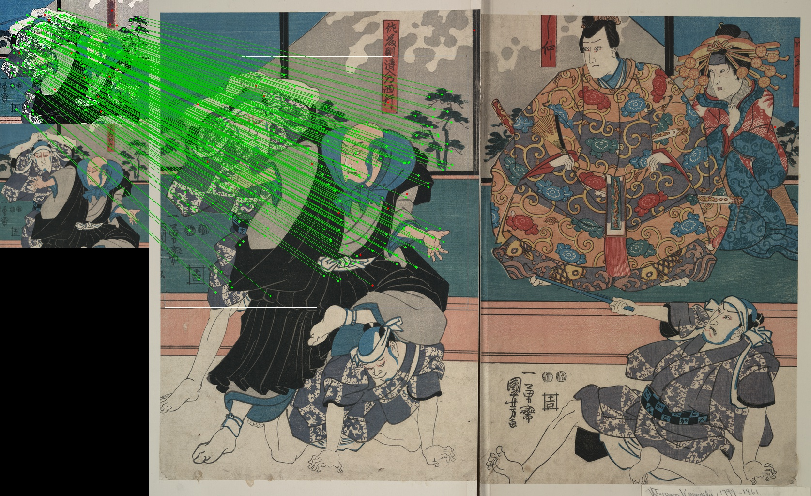
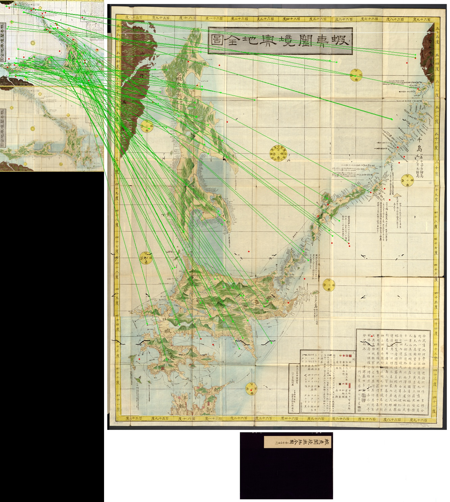
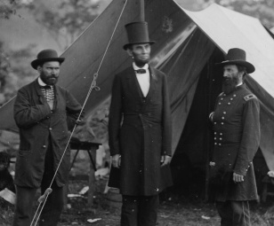
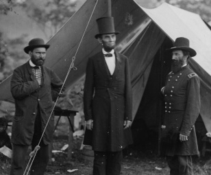
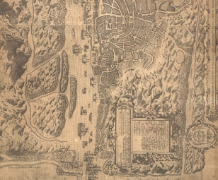
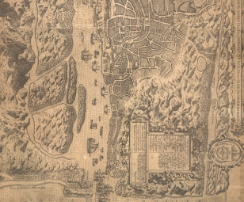

Reconstructing thumbnails using OpenCV
Building higher-resolution thumbnails given the original master file and a lot of CPU time
Background
I work with collections of scanned images which have been on the web for awhile. Each one has a hand-selected thumbnail as well as full-image files at various resolutions. Over the years, our default image display size has increased and we're approaching the point where our original thumbnail or reference image size is unpleasantly small. Unfortunately we don't have the data for the various image processing steps which were used to generate these thousands of thumbnails.
I recently decided to experiment with OpenCV to see whether it would be reasonable to locate the original location within the source files so we can extract new versions at arbitrary resolutions.
Techniques
At first glance, the OpenCV template matching tutorial appears to be perfect for the job: give it a source image and a template image and it will attempt to locate the latter in the former. Unfortunately, this falls apart when the template image has been scaled or rotated, which is the often the case for our collections: all the template matching code is doing is sliding the template image around the source image one pixel at a time and measuring the difference!
Fortunately, there are far more advanced techniques in the modern arsenal for building what are known as scale and rotation invariant feature descriptors. Unless you're a CS grad student, you'll want to start with OpenCV's extensive Feature Detection suite. This example shows an even harder variant of our problem: using feature homography to locate a significantly distorted image in a photograph .
For a first pass I'm using SURF with the brute-force matcher, although that will likely change once I take time to compare the other options. This has yielded great results, although the actual match calculation could be faster.
The Results
locate-thumbnail.py has a pretty simple interface which allows you to supply a list of file pairs. It will attempt to reconstruct the original thumbnail from the master image and save the result in the same location. Since the assumption is that you are starting with thumbnails which were originally derived from the master image, it will automatically skip an image if an insufficient number of matching points are detected and since my goal was to get consistently sized output thumbnails the output is coerced to be perfectly rectangular, although it will be rotated by multiples of 90º to match the original orientation as you can see in several examples below.
A basic session looks like this:
$ for i in `seq 1 10`; do echo $i; curl -sko $i.jpg http://content.wdl.org/$i/thumbnail/308x255.jpg -O http://content.wdl.org/$i.png; done
1
2
…
$ locate-thumbnail.py --display --save-visualization {1..10}.{jpg,png}
INFO locate_thumbnail: Attempting to locate 1.jpg within 1.png
INFO locate_thumbnail: Found 147 matches
INFO find_homography: 130 inliers, 147 matched features
INFO reconstruct_thumbnail: Reconstructing thumbnail from source image
INFO reconstruct_thumbnail: Thumbnail bounds within source image: [[190, 407], [870, 407], [868, 969], [191, 970]]
INFO reconstruct_thumbnail: Resizing from (563, 680) to (308, 255)
Master dimensions: 1271x1024
Thumbnail dimensions: 255x308
Reconstructed thumb dimensions: 255x308
INFO locate_thumbnail: Saved reconstructed thumbnail 1.reconstructed.jpg
INFO locate_thumbnail: Saved match visualization 1.visualized.jpg
INFO locate_thumbnail: Attempting to locate 2.jpg within 2.png
Examples


{kind=link}
{kind=link}


{kind=link}
{kind=link}
 

{kind=link}
 
{kind=link}
{kind=link}
Quite Possibly Working Code
All of the code above is available on Github and should run anywhere OpenCV is available: https://github.com/acdha/image-mining. To the extent allowed by law, it has been released into the public domain.